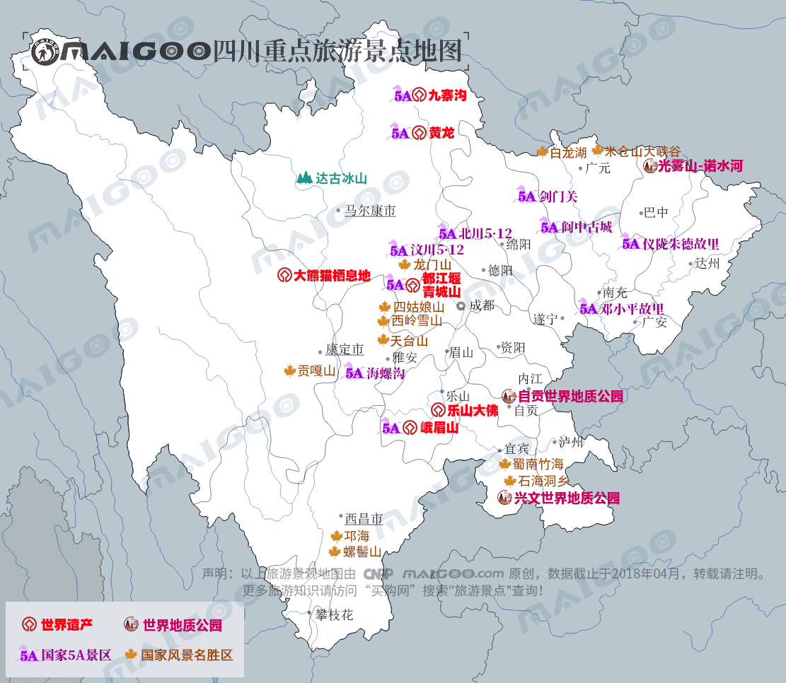

| | | | | |
| - | - | - | - | - |
|<b>别名</b>|川，蜀，天府之国||<b>著名景点</b>|九寨-黄龙、都江堰-青城山、乐山-峨眉山、阆中古城、稻城亚丁等|
|<b>行政区类别</b>|省||<b>机 场</b>|成都双流国际机场、绵阳南郊机场等|
|<b>所属地区</b>|西南地区||<b>火车站</b>|成都站、成都东站、绵阳站、内江北站、达州站、乐山站等|
|<b>下辖地区</b>|1个副省级市、17个地级市、3个自治州||<b>车牌代码</b>|川A-川Z|
|<b>电话区号</b>|028，081X，082X，083X||<b>GDP</b>|36980.2亿元（2017年）|
|<b>邮政区码</b>|61XXXX，62XXXX，63XXXX，64XXXX||<b>人均GDP</b>|44651.00元（2017年）|
|<b>地理位置</b>|中国西南部||<b>主要河流</b>|长江、岷江、沱江、涪江、嘉陵江|
|<b>面 积</b>|48.6万平方千米||<b>高等学府</b>|川大、电子科大、西南交通大学等|
|<b>人 口</b>|8302万人（2017年）||<b>历史名人</b>|李冰、诸葛亮、武则天、邓小平等|
|<b>方 言</b>|西南官话-四川话、彝语、羌语、藏语、客家话||<b>省委书记</b>|彭清华|
|<b>气候条件</b>|亚热带季风气候（四川盆地）、高原山地气候（川西高原）||<b>省 长</b>|尹力|
| <b>四川生活文化</b> | <b>四川民间特色文化</b> | <b>四川曲艺文化</b> | <b>四川建筑文化</b> | <b>四川宗教文化</b> |
| - | - | - | - | - |
| <a href="javascript:;" onclick="live(this);">习俗/民俗</a> | <a href="javascript:;" onclick="feature(this);">传统曲艺</a> | - | - | - |
| <a href="javascript:;" onclick="live(this);">方言文化</a> | <a href="javascript:;" onclick="feature(this);">川剧</a> | - | - | - |
| <a href="javascript:;" onclick="live(this);">节日文化</a> | <a href="javascript:;" onclick="feature(this);">蜀绣</a> | - | - | - |
| <a href="javascript:;" onclick="live(this);">嫁娶文化</a> | <a href="javascript:;" onclick="feature(this);">糖画</a> | - |-|-|
| <a href="javascript:;" onclick="live(this);">饮食文化</a> | <a href="javascript:;" onclick="feature(this);">四川皮影戏</a> | -|-|-|
| <a href="javascript:;" onclick="live(this);">四川禁忌</a> | - |-| -|-|
|-| - |-|-|-|
## <i class="fa fa-file-text-o"></i>&nbsp;目录（Table of Contents）
+ [I. 总路线图（暂无）](#one)
+ [II. 景点](#two)
+ [III. 路线规划（暂无）](#three)
<h2 id="two"><i class="fa fa-star-o"></i>&nbsp;景点</h2>
